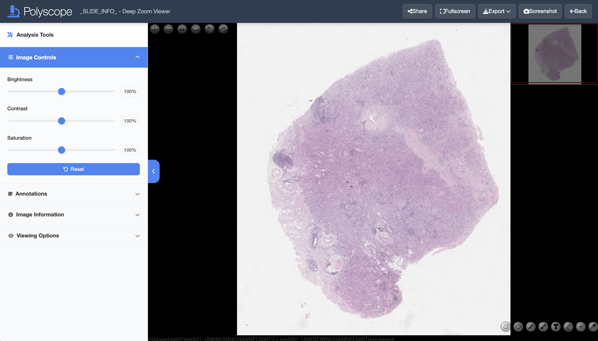

Pages > Image
Abstract
Image page offers interactive view of the image and enables annotation collection.
View Images
View Modes
The goal of the Image Page is to let users view and annotate images. This page can be configured to two modes:
- Polyzoomer: referring to a single image view.
- Multizoomer: referring to a combination of multiple image views.
Before you start, make sure you choose a set of annotation shapes and colors to be used for each semenatic class to ensure consistency. Once an annotation is created, it cannot be edited (shape or color) unless it is deleted and recreated.

View Controls
You can control the displayed image view by mouse or keyboard. On the top left of the slide view, you will find the following view control buttons:
- Click or or use mouse scroll to zoom. Double left click to zoom in.
- Drag with left mouse button to pan.
- Click to reset the view.
- Click to display the current slide in full screen.
- Click or icons to rotate the slide 90 degrees clockwise or counterclockwise, respectively.
In addition, keyboard offers the following alternative view controls:
- Press = or - to zoom in and out, respectively.
- Press Up, Down, Left, Right or W, A, S, D keys to pan.
- Press 0 to reset the view.
To adjust the displayed image brightness, contrast, and saturation, using the sliders on the Analysis Tools side panel. Click the Reset button to reset the properties.
Download and Copy View
To download the currently displayed image view to an image file, click the Export button on the top right and select the Export Image option. Alternatively, right click over the image area and select the Save image As... context menu option. Supported file formats is png.
You can also copy the current view by selecting the Copy Image menu option in the right click context menu.
Annotation
Create Annotations
On the lower right of the slide view, you will find the following annotation control buttons:
- Click and drag on the slide using left mouse button to add a rectangle annotation.
- Click and drag on the slide using left mouse button to add an ellipse annotation.
- Click
⟋and drag on the slide using left mouse button to add a line segment annotation. - Click and drag on the slide using left mouse button to add an arrow annotation from tail to head.
- Click to add a text annotation. In the popup window, type in the text after the prompt 'Please enter the annotation text'. Click 'OK' to add the annotation.
- Click and drag on the slide using left mouse button to draw a freehand annotation.
- Click
.and left click on the slide to add a point annotation. - Click the and click on the popup color swatches to change the annotation color.
Note that once an annotation is created, it cannot be edited (shape or color) unless it is deleted and recreated.
Tip
Annotations are automatically saved and you can safely close the browser window whenever you want.
Delete Annotations
To delete an annotation, double click on it and click 'Yes' in the popup message box. Multiple annotations must be deleted one by one.
Deletion cannot be undone by the user. However, deleted annotations are recorded and can be retrieved for later analysis if necessary.
Download Annotations
Annotations created in Polyscope can be exported to common formats such as CSV and JSON, as well as Polyscope TXT format. Click the Export button on the top right and select Annotations TXT menu option to download the annotations in Polyscope .txt format. Other formats follow similarly. Annotations can be downloaded at any time and multiple times if needed.
Important
Since the annotation file does not contain corresponding source image information, it is recommended to name the file properly with relevant information.
Polyscope annotation txt format
We save the following properties of annotations, one row per annotations. The description of columns ordered from left to right are:
- Annotation state:
0= deleted,1= active. - Index: started from one, ordered by creation or deletion time.
- Shape type:
0= line segment,1= arrow,2= rectangle,3= ellipse,4= freehand,5= text,6= point. - Data, depending on the shape type:
- Line segment, arrow: a list of 2 (x, y) coordinates denoting start and end points, e.g.
[(0.1,0.2),(0.3,0.4)]. - Rectangle, ellipse: a list of 2 (x, y) coordinates denoting the top-left and bottom-right corners, e.g.
[(0.1,0.2),(0.3,0.4)]. - Freehand: a list of (x, y) coordinates of variable length, e.g.
[(0.1,0.2),(0.3,0.4),...]. - Text: a list of a (x, y) coordinate and text string, e.g.
[(0.1,0.2),'text']. - Point: a list of 2 (x, y) duplicated coordinates, marking the point location, e.g.
[(0.1,0.2),(0.1,0.2)]. - Note that coordinate values for both x and y axes are normalized to 0 to 1 according to the width of the slide.
- Color: in hex such as
#ffffff. - Created date and time: in the format of
d/m/yyyy/HH:mm:ssin local time zone.
For example, different formats of the same rectangle annotation are shown below:
Annotation Statistics
In the Annotation section of the Analysis Tools side panel, you can view a real-time summary of created annotations. The statistics include counts of each annotation types.
Link Sharing
You can bookmark and share the URL of the current image page with others for collaboration. The Share button on the top right offers convenient sharing options.
Example
A Polyzoomer/Multizoomer link might look like this: .../customers/jsmith1-mdanderson-org/Path000001_202402061731/page/test001/index.html. You may omit the index.html part.
Warning
The link is publicly accessible, so it is advisable to keep it confidential.
Tip
If you need to share an image with multiple independent users, consider creating multiple Polyzoomers/Multizoomers from the same file.